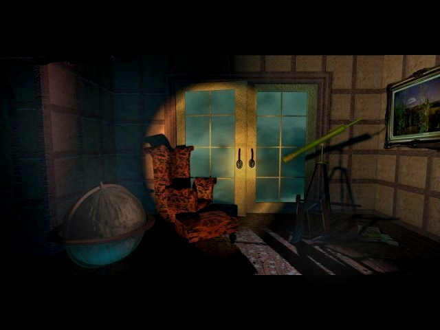

"Oh. Didn�t see you come in. You gave me quite a fright."
Good old library with it's secret passages and it's own writing desk. Here you can find all the solutions for the puzzles. It contains the end-sequences too, so if you don't want to know them, look out. I have to confess, I didn't write the solutions this time, but the ones I have a good enough, so of you go and solve that puzzle!
Puzzle Solutions:
Table of Contents
- Map
- Game Walkthrough with Treasure Hunt Solutions
- Endgame
- Secret Passages
- Books Puzzle in Library
- Cash Register Puzzle in Brian Dutton's Room
- Four Knights Puzzle in Foyer
- Pool Balls Puzzle in Game Room
- Encoded Message #1
- Spiders Puzzle in Bathroom
- Encoded Message #2
- Mirror Puzzle in Ed Knox's Room
- Train Puzzle in Attic
- Plates Puzzle in Kitchen
- Cube Puzzle in Ham. Temple's Room
- Triangle Puzzle in Martine Burden's Room
- Jewelry Box Puzzle in Julia Heine's Room
- Furniture Puzzle in Music Room
- Four Bishops Puzzle in Doll Room
- Installation Notes
- General Notes
- WalkThrough
Game Walkthrough with Treasure Hunt Solutions
Solve Books Puzzle in Library
Winter coat worn for a mixer?
WINTER COAT is an anagram of TONIC WATER
Answer: Bottle of Stauf tonic water on fireplace mantel in
library
Solve Cash Register Puzzle in Brian Dutton's Room
Rolling rock, bottle cap.
ROCK is an anagram of CORK
Answer: Champagne bottle cork in Brian Dutton's room
Solve Four Knights Puzzle in Foyer
Artsy, excited lecher.
ARTSY is an anagram of SATYR
Answer: Satyr picture in gallery
A heart attack could put you into the ground.
HEART is an anagram of EARTH
Answer: Globe in library
Play Mechanical Mouse game in Laboratory
Autoplay: 14 moves
BattleGround.
TABLET is an anagram of BATTLE
Answer: Tablet in laboratory in front of Thornton prescription
bottle
Bars deter cuckoo bird.
BARS DETER is an anagram of REDBREAST
Answer: Painting outside dining room door
Modern art flourishes under the sun.
Answer: Modern art picture in gallery [8 O'CLOCK GAME]
Autoplay: 3 moves
SkedAddled.
SKED is an anagram of DESK
Answer: Desk in library
Part of the body examined in doctor's office.
docTORSOffice
Answer: Torso sculpture in gallery
Libation for an affectionate puppy called Sounder.
Answer: Champagne bottle in Brian Dutton's room
Solve Pool Balls Puzzle in Game Room
Animal sullied street.
STREET is an anagram of SETTER
Answer: Irish setter in dogs picture in game room
Encrypted message #1 "Jfcr vx..."
See translation notes
Answer: Grandfather clock in foyer
Solve Spiders Puzzle in Bathroom
Encrypted message #2 "Zu gotdy..."
See translation notes
Answer: Straight razor in bathroom
Fruit Loop on stove.
Answer: Picture of orange in dining room
Solve Mirror Puzzle in Ed Knox's Room
Dreams abound of arming the rebels.
What of nocturnal horses' schedules?
Answer: Nightmare picture in Ed Knox's room
A distant, ancient Castle Keep
This famous Prince a place to sleep
To sleep, perchance to dream
Of an upset teagarden indochine.
TEAGARDEN is an anagram of GREAT DANE
Answer: Great Dane picture in library
A man-horse on the fly
Sounds like a wounded bull's eye.
The pyramid seems a stretch, the dart board would be a better answer
Answer: Pyramid sculpture in chapel [9 O'CLOCK GAME]
Put an olive in a stein,
mix it up, and get the
equivalent of a fool's
London subway.
OLIVE STEIN is an anagram of TELEVISION
Answer: Television set in Brian Dutton's room
A vital, instrumental part.
Answer: Organ in chapel
Solve Train Puzzle in Attic
22233642-736846873
Telephone code: ACADEMIC-PENTHOUSE
Answer: White rook on chessboard in attic
Light piece from great orchestra.
greaTORCHestra
Answer: Torch from chapel
Solve Plates Puzzle in Kitchen
Cheesy gadget that sounds larger.
Answer: Cheese grater in kitchen
500 = 100 = 0
Answer: CD-ROM in front of red bottle on table in laboratory
Blend a TEAPOT SHOT and the pearlies won't rot.
TEAPOT SHOT is an anagram of TOOTHPASTE
Answer: Tube of toothpaste on sink in bathroom
Solve Cube Puzzle in Ham. Temple's Room
Slyness holding shipment in choppe?
Answer: Guillotine in Ham. Temple's room
Poor drainage could still produce a flower.
DRAINAGE is an anagram of GARDENIA
Answer: Picture in second-floor hallway
Solve Triangle Puzzle in Martine Burden's Room
Sounds like it got higher from wine.
Answer: Rose in vase in Martine Burden's room
Solve Jewelry Box Puzzle in Julia Heine's Room
What kind of jewelry is angrier?
ANGRIER is an anagram of EARRING
Answer: Moon-and-stars earring on dressing table in Julia
Heine's room
You might hear a well-mannered Cockney with a 60's hairstyle.
Answer: Beehive honeycomb in Room at the Top [10 O'CLOCK GAME]
Autoplay: 33 moves
Solve Furniture Puzzle in Music Room
Instrument is sharp, but is missing its head.
Answer: Harp in Music Room
A defective truck with a crane makes for a ball-busting ballet.
TRUCK AND CRANE is an anagram of NUTCRACKER
Answer: Nutcracker in hallway outside door to Game Room
Look at key missing first misprinted label.
Answer: Eyeball on pool table in Game Room
Disabled cutting edge.
ABLED is an anagram of BLADE
Answer: Knife in headboard in Ham. Temple's room
Unreasonable reason.
Answer: Locomotive in attic
Paper used in unusual theses.
THESES is an anagram of SHEETS
Answer: Bloodstain on bed in Martine Burden's room
Adroit holding a sharp instrument.
Answer: Cleaver in basement door in kitchen
A desserted Arthropod.
Answer: Cake with ears in dining room [11 O'CLOCK GAME]
Autoplay: 28 moves tie, 26 move lose, 27 moves win
663 264625 46 2 6455466
Telephone code: ONE ANIMAL IN A MILLION
Answer: Lion sculpture in hallway
Drink left at sea.
Answer: Glass of port in Ed Knox's room
Solve Four Bishops Puzzle in Doll Room
Snake, baby, trap.
Answer: Baby rattle in Nursery
A letter from Greece is quite a number in Rome.
Error in game: the 24th letter of the Greek alphabet is Omega; Xi is
actually the 14th letter
Answer: XI on grandfather clock in foyer
This eight letter word has kst in the middle, in the beginning, and
at the end.
Answer: Inkstand in desk in library [LAST SAVE GAME POSITION]
Play in my doll house!
Endgame
Go to doll house in Nursery (15 movements). Zoom in on kitchen floor.
There is no Autoplay option with the Floor Game, so here is a strategy that works most of the time:
You Stauf H K E L C A or B (1) J M G F N I, removing your pieces at G & H G H or D (2) E D O (1) You can win at move 17 if Stauf plays B (2) If D, you can win by playing O
If Stauf plays unexpectedly, restart the game or choose a new starting position.
The endgame sequence begins after you win the Floor Game. No speedups with the right mouse button are possible for the rest of the game. First is a 7-minute sequence moving down the hall to Ham. Temple's room, pausing at each and every decision point. Then, you have a 38-second window (12 strikes of the clock) to pick one of three doors, each of which results in a different final video sequence. Finally, you spend the next 5 minutes watching the mandatory game credits (no way to skip through these, short of rebooting). Once you get all the way through the credits, the final configuration file S11H.0 is created in your installation directory. When present, this file causes future plays of the game to have an Open House feature with which you can move around the house at will. If you rebooted during the credits.
Secret Passages
From To Use Foyer Gallery Grandfather clock Gallery Foyer Left-hand painting on back wall Library Laboratory Statuette on back wall Laboratory Ham. Temple Locked door via crypt Brian Dutton Chapel Rear door Chapel Brian Dutton Confessional Ham. Temple Foyer Center door Ham. Temple (random) Right-hand door Doll Room Nursery On floor to left of dresser (very sneaky)
Books Puzzle in Library
Solution:
Move 1: R G . R G R G R G _ _
Move 2: R _ _ G R . G R G G R
Move 3: R R G G _ _ R G . G R
Move 4: R . R G G G G R _ _ R
Final Arrangement: _ _ G G G G R R R R
Cash Register Puzzle in Brian Dutton's Room
Solution must have the same key locations pressed in each row.
Key patterns of all four possible solutions (*: key pressed, _: key not pressed):
_ _ _ * _ _ * * 6 total keys pressed _ _ * * _ _ _ * 6 total keys pressed * * _ _ * * * _ 10 total keys pressed * * * _ * * _ _ 10 total keys pressed
Four Knights Puzzle in Foyer
Solution in 40 moves: A -*-> D ---> J ---> B ---> H G -*-> A ---> D ---> J ---> B E -*-> G ---> A ---> D ---> J F -*-> D ---> A ---> G ---> E J -*-> D ---> A ---> G B -*-> J ---> D ---> A H ---> B ---> J ---> D ---> F A -*-> D ---> J ---> B G -*-> A ---> D ---> J F -*-> D ---> A ---> G J -*-> D ---> A B ---> J ---> D ---> F *: Destination selection automatic
Pool Balls Puzzle in Game Room
The only possible solution:
Encoded Message #1
JFCR VX QCTF,
ZAY RM UMY KCYTD.
E DCGF DCURB KEYD KDETD YM
WMAUY,
ZAY DCGF UM TJMYTD.
E DCGF UM IFLB CUR XFY E JAU.
EQ KF KFJF JFICYFR
XMA'R ZF YDF BMU MQ VX BMU.
Not a simple offset code.
Decoding Order:
Encoded Plain Reasoning A U Hint M O Hint R D Hint X Y Hint U N DO + NOT C A AND B S SON Q F SON OF E I IF V M MY Z B BUT Y T BUT F E YET D H THE G V HAVE J R RELATED I L RELATED L G LEGS K W WERE T C FACE
Solution:
READ MY FACE,
BUT DO NOT WATCH.
I HAVE HANDS WITH WHICH TO
?OUNT,
BUT HAVE NO CROTCH.
I HAVE NO LEGS AND YET I RUN.
IF WE WERE RELATED
YOU'D BE THE SON OF MY SON.
Spiders Puzzle in Bathroom
Notation:
1 2 3
4 5
6 8
7
Solution (note triangular structure):
1 ---> 7
6 ---> 5 ---> 1
8 ---> 2 ---> 6 ---> 5
3 -*-> 4 ---> 8 ---> 2 ---> 6
7 -*-> 3 ---> 4 ---> 8
1 -*-> 7 ---> 3
5 -*-> 1
*: Destination selection automatic
Encoded Message #2
I had solved this puzzle from the first clue, but was disappointed to see the answer just given away in the hints.
Solution:
MY FIRST IS NOT BENT AROUND.
MY SECOND MEANS
LIFT HER UP
OR
CUT HER TO THE GROUND.
Mirror Puzzle in Ed Knox's Room
Zoom in, then out to get piece borders.
Order of one solution (configuration may vary):
A C E G H or A C E H B D F I B D F G I
Piece descriptions (move into flashlight beam to see better):
- A: Mostly yellow, three black spots sloping down to right
- B: Small black bump 70% up right-hand side, elbow-shaped black patch at bottom
- C: About half coverage yellow, black silhouette of the number 3
- D: Horizontal black stripe 55-80% up, slopes up to include right corner
- E: Very thin yellow filament about 15% of the way up
- F: Two horizontal yellow horns in upper right quadrant
- Upper G: Top and bottom yellow border, small yellow bump 30% up RHS
- Lower G: Black triangle 80% up, curved black at bottom
- H: Mostly yellow with small black patch in center of bottom edge
- I: Mostly yellow, bottom 15% black, slopes up from center to right
Top-row pieces can be moved into position with a simple rotation of the unordered pieces on the right. For positioning of bottom-row pieces, note that the arrangement
------------- | V | | W | |---|---|---| | Z | X | Y | -------------
can be transformed (X and Z exchanged) into the new arrangement
------------- | V | | W | |---|---|---| | X | Y | Z | -------------
by performing the move sequence
1 4 5 6 3 2 1 4 5 2 3 6 5 4 1 2
using the positional notation
------------- | 1 | 2 | 3 | |---|---|---| | 4 | 5 | 6 | -------------
Use this sequence to move a bottom-row piece to the left, underneath a properly-positioned top-row piece.
If you solve the puzzle by these methods and arrive at the configuration
A C E G I B D F H
then a solution is impossible and you will need to restart the puzzle with a new, hopefully-solvable random starting arrangment.
Train Puzzle in Attic
This puzzle takes 25-30 minutes to solve.
Notation:
Left Siding Main Line Right Siding
--------------+----------------------+----------------
\ /
+------------------+
Lower Siding
*: Engine
Notes:
- Engine cannot push a car (except in reverse) because of its cowcatcher
- Engine can move only one car at a time
- Main Line and Lower Siding are functionally equivalent
- Main Line and Lower Siding can hold maximum of four cars each
- Right Siding cannot hold engine
- Programming bug: no color erasures when moving switch flags
Starting Arrangement:
--------------+----------*F----------+----AUST--------
\ /
+------------------+
Move A to main line via lower siding.
--------------+---------*AF----------+----UST---------
\ /
+------------------+
One at a time, move US to main line via lower siding.
--------------+--------*SUAF---------+----T-----------
\ /
+------------------+
Move T from right siding to lower siding (engine goes too far -- backtrack from left siding).
--------------+---------SUAF---------+----------------
\ /
+--------*T--------+
One at a time, move SUA from main line to lower siding. Don't forget to flip the left switch every time the engine is on the left siding.
--------------+----------F-----------+----------------
\ /
+------*AUST-------+
Move F from main line to right siding.
--------------+----------------------+----*F----------
\ /
+-------AUST-------+
Move A from lower siding to right siding.
--------------+----------------------+----*AF---------
\ /
+-------UST--------+
One at a time, move UST from lower siding to main line.
--------------+---------*TSU---------+----AF----------
\ /
+------------------+
Move A from right siding to lower siding (engine goes too far -- backtrack from left siding).
--------------+---------TSU----------+----F-----------
\ /
+--------*A--------+
One at a time, move TS from main line to lower siding.
--------------+----------U-----------+----F-----------
\ /
+-------*STA-------+
Move U from main line to right siding.
--------------+----------------------+----*UF---------
\ /
+-------STA--------+
Technically, this arrangement spells STAUF correctly, but apparently the letters must all be connected. One at a time, move ST from lower siding to main line.
--------------+---------*TS----------+----UF----------
\ /
+--------A---------+
Move A from lower siding to right siding.
--------------+----------TS----------+----*AUF--------
\ /
+------------------+
Move T from main line to right siding via lower siding.
--------------+----------S-----------+----*TAUF-------
\ /
+------------------+
Move S from main line to right siding.
--------------+----------------------+----*STAUF------
\ /
+------------------+
Plates Puzzle in Kitchen
Notation:
Number plate positions clockwise starting with 1 at a star point
Solution:
Move plate at position 2 to position 5
Move plate at position 10 to position 7
Move plate at position 8 to position 3
Move plate at position 6 to position 9
Move plate at position 4 to position 1
Cube Puzzle in Ham. Temple's Room
Solution:
Select 4 in bottom tier
Select 1
Select 3
Select 1 in bottom tier
(4 and 6 are played automatically)
Select 2
Select 1
(2 is played automatically)
Triangle Puzzle in Martine Burden's Room
Solution: UNINTENTIONALLY STRAIGHTFORWARD
L 13
N E 4 6
I N A Play in this order: 3 7 12
L T N T 14 8 11 5
Y I O N U 15 9 10 2 1
R 11
I W 5 12
A G S Play in this order: 13 6 1
R H T O 14 7 2 10
A D T R F 4 15 8 3 9
Jewelry Box Puzzle in Julia Heine's Room
Positions: 1 6 2 5 3 4 One of many solutions: Exchange positions 1 & 4 Exchange positions 2 & 4 Exchange positions 4 & 6 Rotate position 1 once Rotate position 3 once Rotate position 5 twice
Furniture Puzzle in Music Room
(R,C) below refers to row,column when ambiguous
P: Piano
S: Sofa
C: Chair
T: Table
Sequence 1 of 4 Sequence 2 of 4 T Down C Down Down (3,3) C Down S Down Down C Down (1,3) C Right C Right Right C Right S Up P Right T Left S Up Up C Down S Left C Right C Left Down S Right P Down S Down Down C Left Left P Left C Up Left C Up Up S Up Up C Up Up C Up Up C Up Up S Right S Left C Right Down
Sequence 3 of 4 Sequence 4 of 4 P Down S Up Up (1,2) C Down Right P Right S Right C Down Down S Up Up C Down Down P Left S Right C Left S Up Up S Up (4,2) C Left Up C Right T Up C Down Down C Left Left P Right C Left Left S Down Down P Down S Left C Right Right (2,3) C Left C Right Right C Left T Up S Left (5,2) C Up Left P Left & out
Four Bishops Puzzle in Doll Room
Notation: 4 8 2 6 10 3 7 1 5 9 Solution in 18 moves: 10 -*-> 7 1 ---> 8 2 -*-> 3 7 -*-> 4 3 ---> 5 8 ---> 10 9 -*-> 6 6 ---> 1 4 ---> 6 5 -*-> 2 10 -*-> 5 6 ---> 8 5 -*-> 7 2 ---> 4 8 -*-> 3 7 ---> 10 4 ---> 9 3 -*-> 2 *: Destination selection automatic
1.> After the whole intro sequence (PG rating. Bastards.), you'll wind up in the Foyer. Look familiar? Head off to the right and go into the Library. Turn till you're facing the fireplace. Note there's a bottle there. Your first "treasure hunt" clue from the GameBook is "Winter Coat Worn For A Mixer." Well, "Winter Coat" is actually an anagram for "Tonic Water." So grab the bottle of tonic water. You get a new, short video sequence. Now, since you're here, walk over to the bookshelf. Note you get the pulsing brain icon when you sweep the cursor across that area. Click on it, and you'll see a row of eight books. The object is to put all the green books on the left, and all the red books on the right. You can only move adjacent pairs, and it has to be done in four moves. So, if the books are set up like this:
1 2 3 4 5 6 7 8
Click on the line between 2&3 (they'll move to slots "9&10" on the right) Then click on the line between 5&6 (they'll move to the now open 2&3 slot) Then click on the line between 8&9, to move those to the now open 5&6. Finally, click on 1&2 to move them to slots 8&9. Puzzle solved, Library done.
2.> Exit the library and go upstairs. Using the GameBook's map, you'll note that Brian Dutton's room is now open. Go in. You'll note that your next clue is "Rolling rock, bottle cap." Bottle cap...and rock is an anagram of "cork." You need a cork. On the floor to the left of the old television, there's an overturned, empty bottle of champagne. Grab the cork. This'll open the Picture Gallery. There's also a cash register in Dutton's room, and it's a puzzle. The idea is to get each half of the register display to show the same amount. The amount needed in each half is 81 cents. So, if the keys are set up like this:
5 5 1 25 5 5 10 10
5 25 10 25 10 10 1 10
Press the left five keys in the top row, and then the left three keys in the bottom row. That's all there is to that one. Alternately, you can press the entire top row of keys, and then the leftmost and rightmost keys on the bottom row...that'll work, too. There are at least two other solutions, but hey, this a walkthrough, not a "gimme every possibility in the world" guide.
3.> Check your GameBook again. You wind up with "Artsy, excited lecher." Anagram time again. Artsy is an anagram of "satyr." Ya gotta find a satyr. (don't even try to tell me you don't know what that is). Go back down to the Foyer, and check the table to the left of the staircase. You'll see there's a section of chessboard on it. Fans of The 7th Guest know what this means...a pain in the ass. Anyway, the object of this puzzle in this one is to reverse the positions of the knights; you can't move a knight off the chessboard, either, which is a bit strange. This is not all that simple. Even the GameBook hint thingy says it takes 40 moves. So, here's the 40 move solution. If the board is set up like this
1
2 3 4 5
6 7 8
9 10
Then, follow this move sequence: Knight at 1 to 4, then to 10, then to 2, then to 8.
Knight at 7 to 1, then to 4, then to 10, then to 2.
Knight at 5 to 7, then to 1, then to 4, then to 10.
Knight at 6 to 4, then to 1, then to 7, then to 5.
Knight at 10 to 4, then to 1, then to 7.
Knight at 2 to 10, then to 4, then to 1.
Knight at 8 to 2, then to 10, then to 4, then to 6.
Knight at 1 to 4, then to 10, then to 2.
Knight at 7 to 1, then to 4, then to 10.
Knight at 6 to 4, then to 1, then to 7.
Knight at 10 to 4, then to 1.
Knight at 2 to 10, then to 4, then to 6. 40 moves, puzzle solved. Next...
4.> Well, you've still got to find that satyr. Check the clock by the chessboard. Check the bottom section with the unmoving pendulum. It's a secret passage to the Portrait Gallery. Wander around until you find a painting with a fallen statue piece (a body section) under it. Look at the painting above it...a nude woman figure struggling with, you guessed it, a satyr. Click on the satyr for another video sequence. Note: Don't do the puzzle in this room yet; it triggers the end of the "7 P.M." hour when you solve it. Check the GameBook for your next clue..."A Heart Attack Could Put You In The Ground."
5.> No problem. Heart is an anagram for "Earth," and "ground" is another hint to that. There's a globe in the Library. Go back to the library and touch the globe. You'll get another video sequence. Now, the Game Book says you want "BattleGround." Wonderful. ANOTHER anagram. "Battle" is an anagram for "Tablet." The tablet you want is in a room that isn't open yet. Go back up to Dutton's room, and click on the closet door (it's a bit tricky to get there, but you'll make it eventually). This takes you to the Chapel. Go through here to the arched doorway in the back, and go through into the Lab. Head to the puzzle on the cabinet. This one's an Artifical Intelligence game. You've got to get the mouse to go into the orange hole. Placing a maze piece in a row causes the other pieces in the row to slide over, or placing one in a column causes the column to slide up or down. Worse yet, you can't put a piece at a row that Stauf played on the last turn. After you place a piece, you can move the mouse to any location along the newly created path. As this is an AI game, you'll find this is incredibly frustrating, and there is no set solution. My best recommendation is actually to let Samantha beat him (that is, keep whacking the Help key on the GameBook till she solves the puzzle). The manual says "overuse of the Help feature may weaken the connection between your helper and you." Yeah, right. Just like the book in the Library in the 7th Guest, if overused, would make it impossible to win. Wrong answer, folks. So, if you really want to play, be my guest...there is no real winning strategy, just a lot of luck. I suggest you just let Samantha beat it. NOW, look at the green bottle next to the puzzle. There's an asprin...or something...tablet next to it. Click on it, to get another video sequence. And another annoying clue..."Bars Deter Cuckoo Bird." Well, "bars deter" is an anagram of "redbreast." A robin. Head through the arched doorway with the levers & gears & stuff, through the crypt (ewwww) and you'll wind up in Temple's Bedroom. Go out of there, and head back to the Foyer. Go find the clock again, and this time, look around the area. You'll find a crooked picture of some birds in a tree. Click on the bird in the lower right corner...it's a robin. Touch it, and you'll get a sequence with Robin in the painting. The Game Book will beep, and you'll get a neat sequence with a tentacle
6.> Now the GameBook beeps again. "Modern Art Flourishes Under The Sun." Well, that's an indication to go solve that painting puzzle back in the portrait gallery again...modern art under a picture of a girl in a dress, standing next to a giant sunflower. So head through the clock (how fortunate, you're right there as it is) and click on the Mondarin painting. This is another Artifical Intelligence game (there's a total of seven...sort of...in the game. Samantha can beat six of 'em). The object is to choose the last possible space, and you can't choose a space that is adjacent to a previously chosen space. When you choose a space, all the spaces touching it brighten, and when Stauf chooses one, all the pieces around it grey out. As it's an AI game, there's no set solution, but here's a good hint: there are two spaces you can choose to start with to have any real chance of winning. These are the vertical rectangle to the right of the center of the painting (that is, to the left of the two big vertical rectangles on the right side of the painting), or the "L" shaped piece at the bottom of the painting in the middle (just above the long horizontal rectangle along the bottom). The game should be over in about five moves. Always remeber to start with one of those two moves, and you might be able to pull off a win. If you get frustrated, Samantha can beat it. Winning this one signals the end of the 7 P.M. hour, gives you a good long ending sequence for the first part, and starts up the 8 P.M. hour. It's gonna get worse, folks...
7.> You start off 8 P.M. with another treasure hunt thing..."SkedAddled." Another anagram, this time..."Desk." So you need a desk. No problem. There is a desk in the Library. Sheesh. You keep going back in there! Talk about annoying. So go click on the desk in the Library and you get another video sequence. Now you get another clue..."Part of the body examined in the doctor's office." Doesn't seem like much of a hint, unless you think the clue is in "the doctor's office." Look closely and you find "torso" in there. (last four letters of "doctor's" and first letter of "office.") So you need a torso. There was one under the picture of the satyr in the Portrait Gallery. Sigh. Go back there and click on the torso on the floor for yet another video sequence, and yet another clue. "Libation for an affectionate puppy called Sounder." Weird clue, but consider...what does an affectionate puppy do? Lick people. Lick 'er. Liquor. Bad joke, but it's the clue you want. (The "Sounder" bit is a clue that the words sound like each other) Go back to Dutton's room again, and click on the champagne bottle (which you got the cork from before). How annoying. Guess what. Another video sequence, and another clue..."Animal sullied street." Well, now...Animal. Obvious clue, and "sullied" means messed up...it's "street" that's messed up. Yep. Street is an anagram for "setter." An Irish setter. Well, ya gotta go find an Irish Setter.
8.> Head upstairs and go into the Game Room. There's a puzzle you've got to solve on the pool table...the white balls must be changed into the first nine pool balls, in the proper order. Click on a ball, it turns to the number 1 ball. There's only one way you can do it, though, (Stauf's rules) so they can only be done in a certain order. Even though it's on an angle, look at it as a skewed square. Do it in this order
7 8 9
6 4 1
5 2 3
Once you're all set with that, look around for the picture of the dogs playing poker. One of the dogs is an Irish Setter. Touch it, and the GameBook gives you a video sequence with an interview between Robin and a doctor...Eileen's doctor. Including a flashback scene of Eileen's hand sliced off at the wrist...yay! Blood and gore! Plus, you get another clue (what a bargain!)
9.> Of course, it's completely messed up...it's like the whole thing is in a code. Hope you're good at codebreaking. Okay, if you're not, let's just say it's a pain. One of the GameBook clues is "Xma'r translates to you'd" Big help. I suppose you could figure it out from that, but if you don't want to..."Read my face, but do not watch. I have hands with which to count, but have no crotch. I have no legs and yet I run. If we were related, you'd be the son of my son." Son of the son...grandson. So this'd be the grandfather...clock. Yep. Back to the foyer. Touch the clock pendulum and you'll get...not a video sequence on the GameBook, but a scene in which you encounter a ghost, or a reflection of a younger Eileen...who's looking for her friend, Samantha. Oh yeah, and you get another clue. It's another bunch o'gibberish. However, this one is set up so that it looks like the entire message is in English, just shifted one key to the right on a typewriter keyboard. These wrap, by the way based on the GameBook's keyboard, so...the first letter "Z," is really "M" shifted one to the right. So, if you don't feel like puzzling through it, the message is "My first is not bent around. My second means lift her up or cut her to the ground." Not bent is "straight," and the second word...lift her up or cut her to the ground. "Raise Her" or "Raze Her." Cute. You want a straight razor. It's upstairs, in the bathroom.
10.> So, head up to the bathroom Go ahead. Look in the tub. Cool! Full o' blood, with a skeleton in it! Look to the right of the tub on the floor, and click on the drain. It's another puzzle. You've got to swap the positions of the brown spiders on the top with those of the white spiders on the bottom. You can only move along straight lines from one point to the next. It must be done in seven moves, and a move is complete when another spider is selected (loosely translated, you don't have to move a selected spider just ONCE). So...if the thing is set up sorta like this
2
1 3
4 5
6 8
7
Then move in this order:
#1: Select 1, move to 5.
#2: Select 3, move to 7, then move to 1
#3: Select 8, move to 4, then to 7
#4: Select 6, move to 2, then to 8, then to 4, then to 3
#5: Select 5, move to 6, then to 2, then to 8.
#6: Select 1, move to 5, then to 6.
#7: Select 7 and move it to 1. That's it.
No problem. Now pick up the straight razor on the edge of the bathtub. Wonderful scene with Marie and Chuck. Fun chick. And another clue..."Fruit Loop On Stove." Here's the clue broken down...it's a fruit, and it has to do with a loop on a stove. A loop is a ring, or an "O," and another word for stove is "range." So "O-range." Go to the Dining Room, and touch the orange in the still life picture. It animates with a truly sick scene, and then you get another video sequence, this time with "Dreams abound of arming the rebels. What of nocturnal horses' schedules?" The clue not only tells you where the next thing is, it also tells you what it is
11.> "Arming the" is an anagram for "Nightmare," and "nocturnal horse" should probably clue you in to that one too. As for rebels...well, there's a room with a Confederate flag in it. That's in Ed Knox's room. Once you're in there, there's an old mirror. You have to slide the panes around in the mirror to restore it to its original state. You have to use the desilvering portions as your guide. The fact that your flashlight beam is always reflected in it does NOT help matters much. The biggest problem with this game is that 50% of the time, it's in a configuration that CANNOT be solved. The GameBook also suggests you use the desilvering sections of the mirror as clues to the solution. When it can be solved, you want to proceed from left to right, solving one column at a time. This is a big pain. While you can eventually beat the puzzle yourself if you keep resetting and trying again, it's okay to let Samantha beat this one, as there is no REAL strategy. The fact it can only be solved half the time makes me call it an AI game, even though it really isn't (that's why I call it the "sort of" seventh AI game). Just remember...if you want to beat it yourself, always start by getting the left column done first, and from then on, consider that section frozen...then move to the next column and try to solve that, then keep that frozen, etc. The panes should wind up set up as follows (one of these will be missing):
1 2 3 4 5
6 7 8 9 10
Where:
Pane 1 has two desilvering portions; a larger, semi-elliptical one up the top, and a smaller semi-elliptical one on the right side of the pane halfway down.
Pane 2 has a big section missing, with the portion along the left side still mostly intact, and some of the bottom still intact.
Pane 3 has a majority of the pane missing, with only a little at the bottom left.
Pane 4 also has a majority missing, with only a tiny bit in the lower left corner, and the upper right corner left.
Pane 5 is mostly intact, save for a little desilvered section on the left side.
Pane 6 is mostly intact, save for a little deslivered section midway up on the right side.
Pane 7 has a thick, mostly horizontal deslivered section running just above center (with the right edge extending upwards to the top), and a tiny deslivered section on the right side down the bottom)
Pane 8 has a mostly horizontal section at the top (obliterating the entire upper left corner), and a smaller patch in the lower right corner.
Pane 9 has a horizontal patch that thins out as it runs left to right in the top section of the mirror, and a second patch obliterating a small section of the lower left corner.
Pane 10 is intact.
Terrible pain (I know, bad joke), especially since the missing pane is random every time. You might just want to let Samantha do this one if you get too frustrated, especially since you really don't know if you can beat the damn thing or not until you're almost finished! Anyway, whatever way you do manage to beat it, after you win, go over to the painting over the fireplace...fans of The 7th Guest will recall this is Fuseli's "Nightmare." Touch the horse. Bingo. And a video sequence involving Robin and the police chief. Next clue comes up then..."A distant, ancient Castle Keep, this famous Prince a place to sleep, To sleep, perchance to dream, of an upset teagarden indochine."
12.> After you finish going, "HUH?" you'll probably be really confused. However, Shakespeare fans will pick up the "perchance to dream" bit as something from one of his works, namely Hamlet. Plus, it mentions "Prince," which should also clue you into Hamlet. But, it's not Hamlet you're looking for...anyone who's ever seen the parody of horror films called "Student Bodies" must remember this joke. Hamlet...is a danish prince. A Great Dane. And "upset teagarden" is an anagram of "Great Dane." So you need a Great Dane. Sorry, the picture of the dogs playing poker in the Game Room doesn't have one. There is a faded picture of one in the Library (not AGAIN!) Go touch it, and you'll wind up with a verrrry interesting "ghost" sequence, including a bit with Marie in an impressive little costume, a Great Dane morphing into the hotel manager, and Marie herself morphing into an interesting monster. Fun chick. I like her. Then you get yet another clue..."A man-horse on the fly sounds like a wounded bull's eye." Well, I wish I could say this wasn't a bad pun, but for those of you who like mythology...Bulls-eye. Hit the bullseye, you hit the center. Centaur, or man-horse. Bad pun. So you need to solve another puzzle...this one ends the 8 p.m. hour. Naturally, this means another AI game. Great. Actually, the "on the fly" also indicates the centaur is winged. This is a big mistake on the part of the game designers, actually. The actual puzzle is in the Chapel (through Dutton's room), and it's the weird sculpture with the triangle in the middle (the puzzle IS the triangle). The mistake is that this is NOT a centaur. Not even close. If it's anything, it's a winged Sphinx! The body shape is more accurate for a Sphinx, but I suppose it could count, as it's the only thing in the house even CLOSE to what you're supposed to be looking for. Click on the triangle
13.> The writer of this solution finds this puzzle hard, I disagree, the trick is to make a chain that touches all of the borders.Start in the middle and make a chain with one empty space between the cells, this way Stauf can't keep up. You've got another big video sequence that shows you quite a bit more of what's happened. And the end of the 8 p.m. hour. Time to move on to 9...nope, it ain't over yet, folks.
14.> You start off the 9 p.m. hour with the clue "put an olive in a stein, mix it up, and get the equivalent of a fool's London subway." Another word for fool is boob. A London subway is called a tube. "Olive in a stein" is an anagram of television...a boob tube. The TV is back in Dutton's room. Touch it, and you'll get a scene with Robin meeting Samantha...your helper in this game. And another clue. "A vital, instrumental part." This is a bad joke, again. "Instrumental" indicates you want an instrument. And "A vital part" is...an organ. So go touch the organ back in the chapel. Great. You get an animation from the organ, and another clue from Stauf..."22233642-736846873." Wonderful. Look at your phone, and match up letters with the numbers to figure out what the clue is. It actually reads "Academic Penthouse." An academic penthouse is an Ivory Tower. Confused? Oh well. Anyway, what you want is up in the attic. Head upstairs and inside. You'll find a little train set. You've got to rearrange the letters attached to the engine so that it reads "Stauf" rather than "Faust." Gee, I wonder if that's where the name came from. This one takes some time, and you've got to use the two switches to change around the letters. Start by clicking the left-hand switch, then move the letter "A" down and around until it ends up left of the "F." Do the same with the "U" and the "S." Then move the "T," then the "S," then the "U," and then the "A" to the bottom track. Move the "F" to the far right of the top track. Now move the "A" to the top track to the left of the "F." Move the "U" to the mid-point of the upper track, then the "S" to the left of the "U," and the "T" to the left of the "S." Move the "A" to the bottom track, followed by the "T" and the "S" (you should have "STA") on the bottom track. Move the "U" to the left of the "F." Now move the "S" from the bottom track to the mid-point of the upper track. Move the "T" from the bottom track to the left side of the "S." Then move the "A" from the bottom track to the left side of the "U." Move the "T" down and around the lower track so it's on the left side of the "A." Then just push the "S" to the right against the "T" on the top track. So much for that... Now walk over to the chess table, and grab the only standing piece...a white rook, or white "castle," or "ivory tower." You meet another ghost...this one of a younger version of Samantha. And then you get another clue.
15.> This one comes up with "Light piece from great orchestra." The answer is hidden in "greaT ORCHestra." And it's a light piece. So you need a torch. There's one on the altar in the Chapel. Go touch it, and you get a scene with Chuck dropping off a dead body at the Mansion. Great. Well, now you get another clue..."cheesy object that sounds larger." Larger...or greater. Cheese grater. That, of course, is in the kitchen. Go over to the butcher's block, and you'll find a series of eyeball plates arranged around a pentagram. This is another puzzle. The object is to create five stacks of two plates on every point of the star pattern. A plate must jump two plates, stacked or not. Once moved, a plate cannot be moved again. At least this one HAS a solution. Assume the plates are arranged like this: (1, 3, 5, 7, and 9 are the five star points)
10 1
9 2
8 3
7 4
6 5
Then, do the following. Move 8 to 1. Move 6 to 3. Move 10 to 5. Move 4 to 7. Move 2 to 9. That's all there is to it. Now turn right and look at the stove. There's a bloody cheese grater there. Pick it up. COOL! Crawling, severed fingers! Nice effect! Then the GameBook beeps, and you get another clue.
16.> "500=100=0" Those of us who are mathematically inclined will say, "boy, is THAT a dumb equation." Consider, though. 0 is a round object. 500 in Roman numerals is "D," and 100 in Roman numerals is "C." So "D=C=round object," or "D is C is round object," or, if you will, "DISC is round object." So you need a disc. Head up to the lab, and check out the small table next to the French door. A case for...believe it or not..."The 7th Guest." Good grief, talk about advertising! You get another short video clip. Then you wind up with another clue, "Blend a teapot shot and the pearlies won't rot." Teapot shot is an anagram for "Toothpaste." So go to the Bathroom (no, I mean WALK to the bathroom) and check the sink. Touch the toothpaste and it turns into a big green bug. Ick. Now the GameBook gives you yet another clue. "Slyness holding shipment in choppe?" Note that "choppe" is spelled in French style. Sly...can be "guile," and a holding shipment is a "lot." So, "Guile lot in choppe." Guillotine. Head off to Hamilton Temple's room. You'll find a cube on the bookshelf in there, which is yet another puzzle. Click on it. Your mission is to get a path from one "arrow" face to the other. The trick here is that the number of pips aren't really numbers, they indicate direction. The direction you choose...defines the meaning of the die face from which you move. So, basically, let's say you start with a the four. Then you click on the one, to its right. From now on, whenever you click on a four face, the next move must be to the right. So, here's one solution (there's several). Start by clicking on the four above the first arrow. Then click on the three above it. (So four="up"). Then click on the six above and to the right of the three (so three="up&to the right"). Then click on the one down and to the right of the six (so six="down& to the right"). Now click on the five to the right of the one (so one="right") Finally, click on the three below the five (so five="down") The puzzle will solve itself from there (because the three will send the path automatically up and to the right to another three, then up and to the right again to the one, which shifts it right to the three, which shifts it up and to the right...to the exit arrow). Now go touch the guillotine...it slices down, but doesn't get you. Then the GameBook has another vid sequence...this one of Eileen's hand getting caught in the Mansion gate and...well, you don't need to know the details, do you? Anyway, you'll get another clue then..."Poor drainage could still produce a flower."
17.> "Drainage" is another anagram...for "Gardenia." Go to the top of the stairs and look at the painting...yep. The big white flower on the left at the bottom is a gardenia. Click it. Nothing seems to happen, but you'll get a message as you start to walk off. After a while, the GameBook beeps again, with another clue..."Sounds like it got higher from wine." Got higher...it "rose." Rose wine. But what you need is a rose, the flower. Go to Martine Burden's bedroom. Go to the table with the pyramid on it...it's another puzzle. For this one, you have to click on letters. You must reveal two fifteen letter words, and once a letter has been chosen, you may not pass through that letter's space again. The outer corridor will always remain open. After you do the first word, different letters reappear to let you get the second word. Okay, the words you want are "UNINTENTIONALLY STRAIGHTFORWARD," so here is the order to click on the letters in:
(First word):
13 4 6 3 7 12 14 8 11 5 15 9 10 2 1
(Second word):
11 5 12 4 6 1 14 7 2 10 13 15 8 3 9
Anyway, once you finish, go over to the vanity...and there's a rose in a vase on it. Click on it, and a petal will fall off. You turn around and run into...Martine Burden. Well, this is an interesting little scene...and she just fades out afterwards. Sorry, folks. I always thought she was a serious babe anyway. Then the GameBook beeps again. Check it, for another clue (big surprise).
18.> "What kind of jewelry is angrier?" Well, well, another anagram. "Angrier" is "earring." So head off to Julia Heine's room. Go for the jewelry box. There's another puzzle, this one in the pendant. The rules are simple: Each gem must be adjacent to a gem of a matching color. You can rotate a cluster of gems or swap positions with another cluster. So, here's a solution. If the pendant is set up like this:
1
6 2
5 3
4
Then, swap 3 and 4. Swap 3 and 6. Swap 3 and 5. Then turn 6 twice, 5 twice, 4 five times, 3 four times, and 2 twice. That'll do it. Next, go over to the vanity and pick up the earring. You'll get a sick little sequence with a ripped-off ear bleeding rather profusely. Nice. Then, guess what, the game book beeps again. This one comes up with "You might hear a well-mannered Cockney with a 60's hairstyle." Well-mannered could mean how someone behaves...and a Cockney accent would make that how someone "behoives," and a 60's hairstyle is...a beehive. So you need a beehive. Go back up to the Attic and click on the door past the staircase (you know, where ya finally beat Stauf in the 7th Guest?).
19.> Up here is a blasted-out room. And a little beehive honeycomb on the floor, which winds up with blood and honey in it. This is another AI puzzle, and doubtless, fans of the 7th Guest will recognize this as the goddamn cell game from that one, except this time, Stauf has the blood and you have the honey. Globules divide into two when moved to an adjacent cell, and jumping two cells moves the globule without replicating. Honey absorbs adjacent cells filled with blood, and vice versa. Listen up, folks. Stauf responds in the same way you hit him. Be aggressive, and he does the same. Play defensively, and he does the same. There are 60 cells total, and you need 31 to win. So, it's even WORSE than the lab puzzle from 7th Guest. There is no set strategy, and it is a MAJOR pain in the ass. So, to be simple, once you get frustrated, just let Samantha do it...hell, it might even take HER a couple tries, but eventually, she will beat Stauf if you just keep punching the button. When you finally beat it, you'll get a long video sequence, which shows a LOT of info about what's been going on here...and an interesting thought. The house is alive, an alien creature. It raped both Eileen and Samantha. Samantha had an abortion, which left her paralyzed, but Eileen gave birth to Marie...a daughter of the house itself. Eww. I don't even want to think about that one for too long. Anyway, that triggers the end of the 9 p.m. hour and the start of the 10 p.m. hour.
20.> You start off with a clue...big surprise..."Instrument is sharp, but missing its head." Well, it's an instrument. And it's "sharp," but missing its head...the first letter. So you get "harp." That's in the music room, way downstairs. Great. Head down there, and you'll find that the piano is blocking the harp. On the mantle is a small game with all sorts of furniture, and a piano. The idea is to move the pieces around until you can move the piano off the board. This one is ROUGH. Anyway, figure the pieces are arranged like this initially:
1 (lounge) 10 (piano) 2 (lounge)
6(chair) 7(chair) 8(chair) 9(chair)
4(lounge) 3 (table) 5 (lounge)
(It's tricky to look at it like that, but consider it as on an angle. You only have two squares open, those to the "south of," or "down from" the endtable.)
3 towards the right side of the board, 7 towards the right side of the board, 7 away from you, 6 away from you, 6 towards the right side of the board, 4 towards the left side of the board, 3 towards you, 7 towards the right side of the board, 6 away from you, 4 away from you, 1 towards the right side of the board, 1 towards the right side of the board, 10 towards you, 8 towards the left side of the board, 8 towards the left side of the board, 6 towards the left side of the board, 6 towards the left side of the board, 7 towards the left side of the board, 7 towards the left side of the board, 5 towards you, 9 towards the right side of the board, 9 towards the right side of the board, 2 towards the right side of the board, 2 towards the right side of the board, 8 away from you, 6 away from you, 10 away from you, 1 towards the left side of the board, 1 towards the left side of the board, 4 towards you, 7 towards you, 7 towards the right side of the board, 10 towards the right side of the board, 8 towards you, 8 towards you, 6 towards the left side of the board, 6 towards you, 2 towards the left side of the board, 2 towards the left side of the board, 9 towards the left side of the board, 9 towards the left side of the board, 5 away from you, 7 away from you, 7 towards the right side of the board, 10 towards the right side of the board, 8 towards the right side of the board, 8 away from you, 1 away from you, 4 towards the left side of the board, 4 towards the left side of the board, 10 towards you, 9 towards you, 9 towards the right side of the board, 5 towards the left side of the board, 7 away from you, 9 towards the right side of the board, 10 away from you, 4 towards the right side of the board, 4 towards the right side of the board, 1 towards you, 6 towards you, 8 towards you, 2 towards you, 5 towards the left side of the board, 5 towards the left side of the board, 10 away from you, 8 towards the right side of the board, 8 towards the right side of the board, 6 towards the right side of the board, 6 towards the right side of the board, 1 away from you, 4 towards the left side of the board, 4 towards the left side of the board, 8 towards you, 8 towards the left side of the board, 3 towards the left side of the board, 9 towards you, 9 towards you, 7 towards you, 7 towards you, 10 towards the right side of the board, 6 away from you, 6 away from you, 8 away from you, 8 away from you, 3 towards the left side of the board, 7 towards the left side of the board, 7 towards you, 10 towards you, 10 towards the right side of the board. 90 moves, and the piano is off the board.
ALL RIGHT! Turn around, and note...the piano is now gone. You can go touch the harp. Then the GameBook beeps with another clue. This begins a good string of stuff without a puzzle.
21.> "A defective truck with a crane makes for a ball-busting ballet." Truck and crane is an anagram for "nutcracker," but for a good laugh, hit the Help key three times to hear Samantha get a bit embarressed by the clue she gives out. Go upstairs to the hallway and touch the nutcracker on the floor in the corner down at the far right end of the hall. It animates for a minute, then you get another video sequence...with Marie and Chuck. Then you get another clue..."Look at key missing first misprinted label." Key missing first...is ey. Then rearrange the letters in label to get eball, and you get...eyeball. The "look at" is also a clue. Go into the Game Room and click on the little cue ball, painted like an eyeball. It spins around, with cut nerves and blood...ick. Then you get ANOTHER clue..."Disabled cutting edge." Hell with it. Without explanation, you find "blade" inside "Disabled," which also reflects the "cutting edge" bit. So you want a blade. Go into Temple's bedroom and click on the hunting knife in the headboard of the bed. You get another video, this one with Chuck stabbing...something. Great. Just what you needed to see. Then you get another clue, one of my favorites..."Unreasonable reason." Unreasonable can mean crazy. A reason for doing something is your motive. So crazy motive... or loco motive. Go to the attic and touch the toy train. A neat little sequence follows, and then you get yet another clue. "Paper used in unusual theses." Theses mixed up is "sheets." Go to Martine Burden's room and touch the bloody part of the bedsheet to get another video sequence...this one with Chuck getting pulled into the house with a bloody corpse. Then you get another clue..."Adriot holding a sharp instrument." Well, this time it's a different blade. Adroit means "clever." So the clue is actually "Clever holding 'A'...sharp instrument," or "Cleaver." Go to the kitchen and grab the meat cleaver embedded in the door. Then you get a wonderful scene with Julia Heine (looking younger than before), Chuck, and Stauf...and Chuck finally gets the cleaver in the head. YAAAYYY!!! Of course, then you get another clue from the GameBook. This one is "A desserted Arthropod." An Arthropod is a type of crustacean. And it's a dessert. Go to the Dining Room, and note the cake shaped like a...yep...a Trilobyte. That's the AI puzzle for the end of the 10 p.m. hour.
22.> When you click on it, you wind up in a game of Connect Four, with bonbons. You're playing against Stauf. The whole mission is to get four of your bonbons connected in a row, four connected in a column, or four connected in a diagonal before Stauf does. THIS time, however, I happen to have a winning strategy, but it all depends on Stauf's first move. There are eight available columns, as follows:
1 2 3 4 5 6 7 8
Always start in column 3 or column 6. If you start in column 3 and Stauf then opens with column 5, you've got him. If you start in column 6 and he opens with column 4, you've got him. Otherwise, I'd suggest you just reset the puzzle...or play him, if you want the fun. Anyway, let's say you get the first situation (you pick 3 and he takes 5). Play in this order, using the columns above as a guide (the odd-numbered moves are yours):
6
4 8
3 7 10
9 11 1 5 2
In that one, you win on the 11th move. Now, let's say the other situation happens; you start in 6 and he takes 4. Play in this order, using the columns above as a guide (once again, the odd-numbered moves are yours):
11
10
14 8
12 4
5 3
6 7 2 15 1 9 13
You can win this one fairly easily (oh yeah?- Bones). Then you get another long sequence...Chuck stabbed the chief (who'd apparently been sleeping with Robin) instead of Robin...so he got the axe. Or the cleaver, in this case. And so on, up into showing Robin entering the house...and the beginning of the eleventh hour. 11 p.m.
23.> Once again, we start off with a clue. "663 264625 46 2 6455466." Another telephone message, and this one says "one animal in a million." Is tere an animal in "million?" Yup. A lion. There's a lion sculpture at the top of the stairs. Go up and touch it. You'll see a scene in which Robin is attacked by a cougar. She and her sister drowned a kitten when they were young, apparently. Hmmph. Bitch deserves to die(she didn't ment it- Bones), after all. Anyway, you then get another clue. "Drink left at sea." Well, left at sea is "port." Port wine is a drink. Head to the Knox's bedroom and click on the wine glass on the table next to the bed. Edward Knox appears, tries to warn you, and then his head blows up. COOL! Then you get another clue..."Snake, baby, trap." These are all words that are associated with "rattle." So go to the Doll Room. On the bureau is a wooden puzzle with tinker toys and chess bishops on it. This is another puzzle. You have to interchange the white bishops on one side with the black bishops on the other. You can move any piece in any order, but it must move along a straight line, and cannot land in line with a bishop of the opposite color. Okay, set the "board" up like this:
4 8
2 6 10
3 7
1 5 9
Where the white bishops start on positions 9 and 10, and the black bishops start on positions 1 and 2. Move 10 to 7. Move 1 to 8. Move 2 to 3. Move 7 to 4. Move 3 to 5. Move 8 to 10. Move 9 to 6. Move 6 to 1. Move 4 to 6. Move 5 to 2. Move 10 to 5. Move 6 to 8. Move 5 to 7. Move 2 to 4. Move 8 to 3. Move 7 to 10. Move 4 to 9. And move 3 to 2 to win. To the left of the bureau, check the floorboards to find a trapdoor...a passage to the nursery. Search around there, and you'll find the rattle. Then you'll get a scene in the nursery...in which Stauf offers Robin money, power, and all that wonderful kind of stuff. Then the video ends...and you get another clue.
24.> "A letter from Greece is quite a number in Rome." Those of you who know the Greek alphabet, raise your hands. Okay, one Greek letter is XI, which is...guess what...eleven in Roman numerals. Go back to the grandfather clock and click on the eleven on the clock face. You get a long video in which...well, we find out, sort of, what happened to Robin. Sort of. Then you talk to Samantha again, who tells you to get out now...she says you can't win. Not what you wanted to hear. Then the GameBook beeps again with another clue..."This eight letter word has "K-S-T" in the middle, in the beginning, and at the end." But that would be nine letters just for the KSTKSTKST. Stupid sounding, but it's another trick. It has "KST" in the middle, "IN" the beginning, "AND" at the end. Or, "INKSTAND." Head back to the Library (groan). When you click on the inkstand, the pen writes down "Play in my doll house!" Head back to the Doll Room, and click on the dollhouse. When you look inside, you'll find that there's a little puzzle on the floor. The Help button won't help you...Samantha says it's because the connection is getting weak. This is deliberate, not because of overusing the help feature. This is the last AI game, and you've got to beat it on your own. It is, in fact, the game of Pente, where the object is to get five of your pieces in a row, or capture five pairs of your opponent's pieces. If you enclose a pair of opponent's pieces with two of your own, you will "capture" those pieces. The whole idea is to get an "open four," or four connected piece of your color without one of Stauf's on either end of the line of four. Get one of those, and you've won, because you should be able to get five no matter what Stauf tries. Luckily, when you play this the first time, you get the first move...and Stauf plays rather half-heartedly. After all, he doesn't mind you beating this one, considering what you'll deal with next. If you go back and play again later, though, he'll play much harder, and if you somehow manage to go back and do it a third time, he starts looking five moves ahead (nearly impossible to beat)(I did it, smirk!- Bones). Anyway, whenever you manage to beat him, you're on to the final challenge.
25.> You go on to a long video, in which you're the contestant in Stauf's game show. He opens up three doors, and you get to pick which one you want. Behind the left door is Marie, in full "slut" mode, offering herself up for you. In the middle is Samantha, in a TV set, logically asking you to choose her. Behind the right door is Robin, who you've been looking for the whole time anyway...and she tells you that she loves you.
Okay, folks, it's decision time. Who do you pick? The lusty Marie? Helpful Samantha? Or your former girlfriend, Robin? Hmmm. Actually, I think it's pretty logical, but here's what happens for each one you choose:
IF YOU PICK MARIE: Basically, you wind up back at a no-tell motel. You and she start to get it on...and then she turns into Stauf in a wig...who then reverts to his natural alien form and proceeds to eat you alive. Literally.
IF YOU PICK ROBIN: Things seem great, as you go off together, and apparently get married. Then YOU are found murdered, and Robin is found to now be president of the brand-new Stauf broadcasting company. Guess Samantha was right, and she said Yes to Stauf after all.
IF YOU PICK SAMANTHA: You have a little conversation with Samantha back at her house. Then you turn on the monitor...and Stauf's house burns to the ground. This, of course, is the ending you're "supposed" to pick in order to truly win the game. End of story!